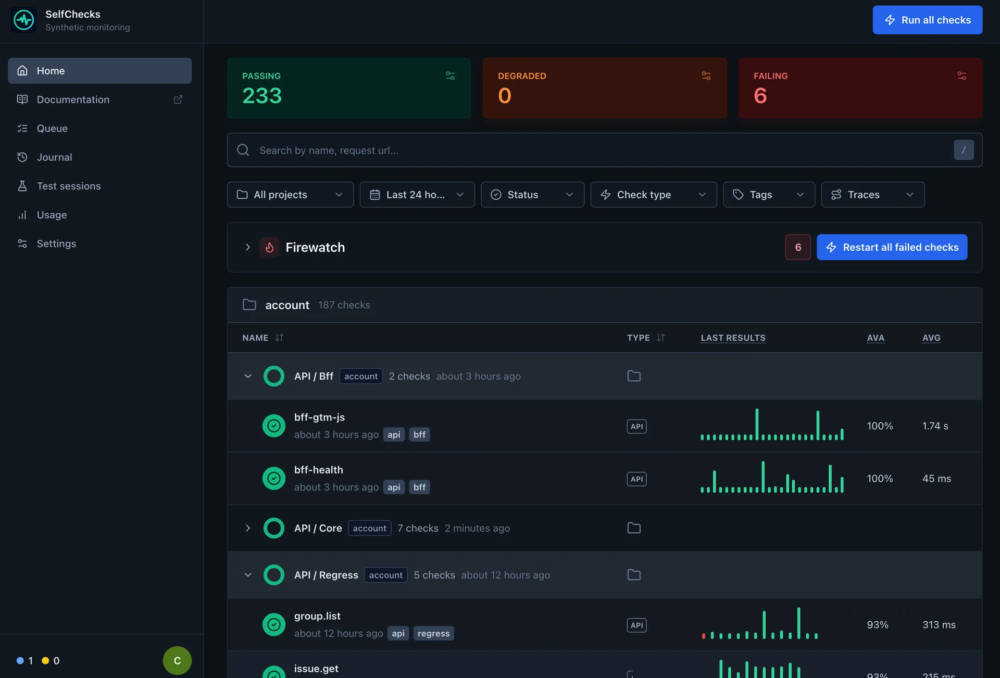
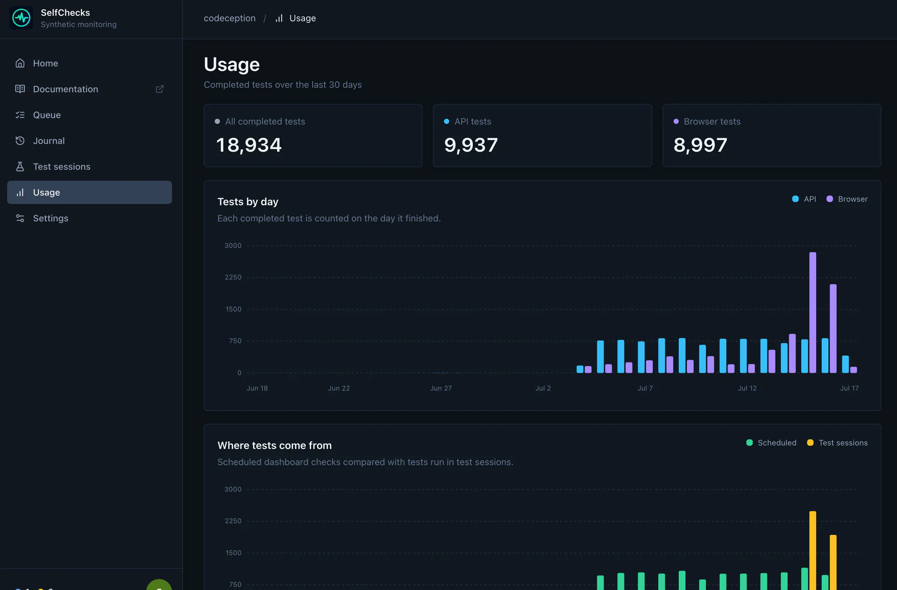
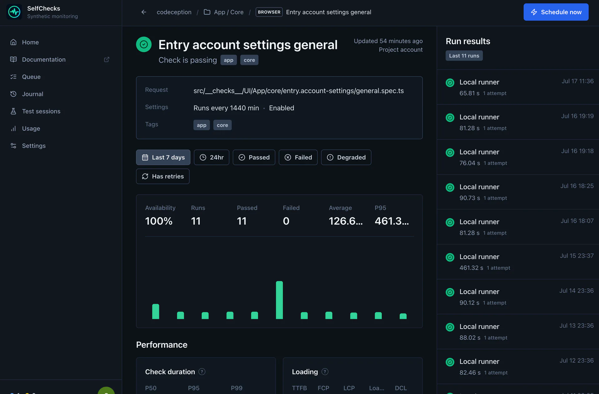

Compatibility import
Bring over Checkly-style constructs when you need them: browser checks, API checks, groups, tags, schedules, and Playwright entrypoints.
Checks as code, on your infrastructure
Selfchecks is a source-available monitoring service for API and browser checks. Define checks in your repository, run them on your own server, and inspect failures with traces, screenshots, videos, logs, and CI-ready reports.
npx create-selfchecks
Source available under the Elastic License 2.0.
Operational shape
Selfchecks is not a full cloud clone. It keeps the familiar repository workflow and gives you a self-hosted alternative to a hosted control plane, with a small runner, dashboard, and notification loop.
Bring over Checkly-style constructs when you need them: browser checks, API checks, groups, tags, schedules, and Playwright entrypoints.
Run checks on your own server through a queue-backed worker, with browser isolation and predictable concurrency controls.
Keep the evidence attached to every run: response data, logs, screenshots, traces, videos, timing metrics, and result JSON.
Trigger checks from CI, show GitHub-style reports, and route failure or recovery events through generic webhooks and Rocket.Chat.
Documentation
Create a project, add browser and API checks, connect GitLab or GitHub CI/CD, use the HTTP API, and deploy Selfchecks on your own server.
Control loop
CI uploads fresh check manifests through the authenticated HTTP API.
Runs enter the worker queue from cron-like schedules, manual triggers, or PR jobs.
Undici powers API checks, while Playwright captures browser evidence.
The dashboard links status, stats, logs, traces, screenshots, and responses.
Webhook adapters keep the incident channel aligned with the latest run state.
Dashboard
The primary UI is an operational dashboard: grouped checks, filters, latest run state, p95 latency, availability, run history bars, artifacts, and settings for environments and notification targets.

Product tour
Start with fleet-wide usage, then narrow the view to a single check and its run history without leaving the same operational context.


HTTP API
Set the service URL and token once. Deploys and test bundles are uploaded through the authenticated API, while triggers queue the latest successful deployment. Project CI does not need SSH or rsync access to the Selfchecks host.
npm install --save-dev @selfchecks/selfchecks-cli
export SELFCHECKS_URL=https://checks.example.com
export SELFCHECKS_API_TOKEN="$CI_SELFCHECKS_API_TOKEN"
npx selfchecks deploy --force
npx selfchecks test \
--tags app,smoke,pr \
-e ENVIRONMENT_URL=https://preview.example.com \
--reporter=github \
--record
npx selfchecks trigger \
--reporter=github \
--retries=1 \
--recordimport { BrowserCheck, Frequency } from "@selfchecks/selfchecks/constructs";
new BrowserCheck("Signin", {
name: "Signin",
activated: true,
frequency: Frequency.EVERY_10M,
locations: ["self-hosted"],
tags: ["app", "smoke"],
code: {
entrypoint: "./signin.spec.ts"
}
});Recorded test sessions keep CI context as separate fields instead of encoding it in a delimiter-based source string. GitLab variables provide the defaults, and every value can be overridden with a CLI flag.
MVP stack
React UI, auth, API routes, settings, run history, and artifact views.
Projects, deployments, groups, checks, runs, artifacts, secrets, and notifications.
Predictable scheduling, retries, concurrency limits, and background execution.
Browser checks with traces, screenshots, videos, console errors, and timing metrics.
API checks with request/response capture and assertion results.
Generic failure and recovery notifications, with Rocket.Chat first.
Quick answers
The short version of what Selfchecks is, how it runs, and where its compatibility and license boundaries are.
Selfchecks is a source-available, self-hosted synthetic monitoring service for API and browser checks defined as code. It combines a runner, dashboard, schedules, CI integration, run artifacts, and webhook notifications.
Run npx create-selfchecks my-checks. The generator
creates a minimal Node.js project with a Playwright browser check,
configuration, scripts, and supported Selfchecks packages.
No. Project CI needs Node.js and the Selfchecks CLI, while Docker is required only on the Linux server that hosts the Selfchecks application and worker.
No. Selfchecks provides a deliberately narrow source-compatible subset for common Checkly constructs and migration. Unsupported Checkly APIs and cloud runtime behavior are not compatibility targets.
Runs can retain request and response data, logs, screenshots, Playwright traces, videos, timing metrics, performance data, and result JSON for investigation.
Selfchecks is source available under the Elastic License 2.0. The license is not OSI-approved and restricts offering substantial Selfchecks functionality to third parties as a hosted or managed service.
{kind=link}
{kind=link}